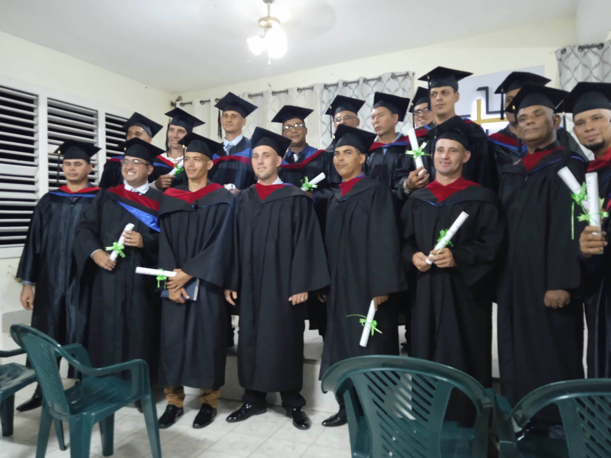
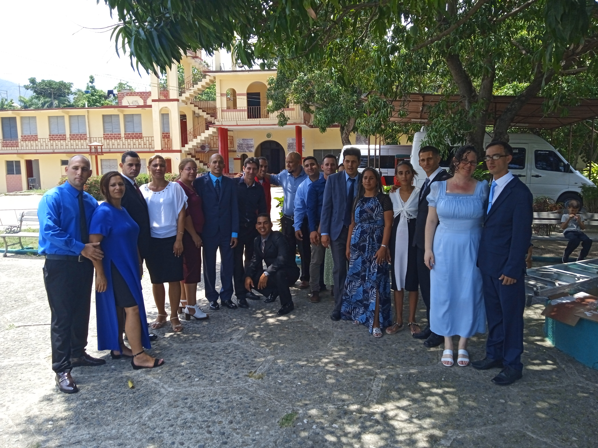
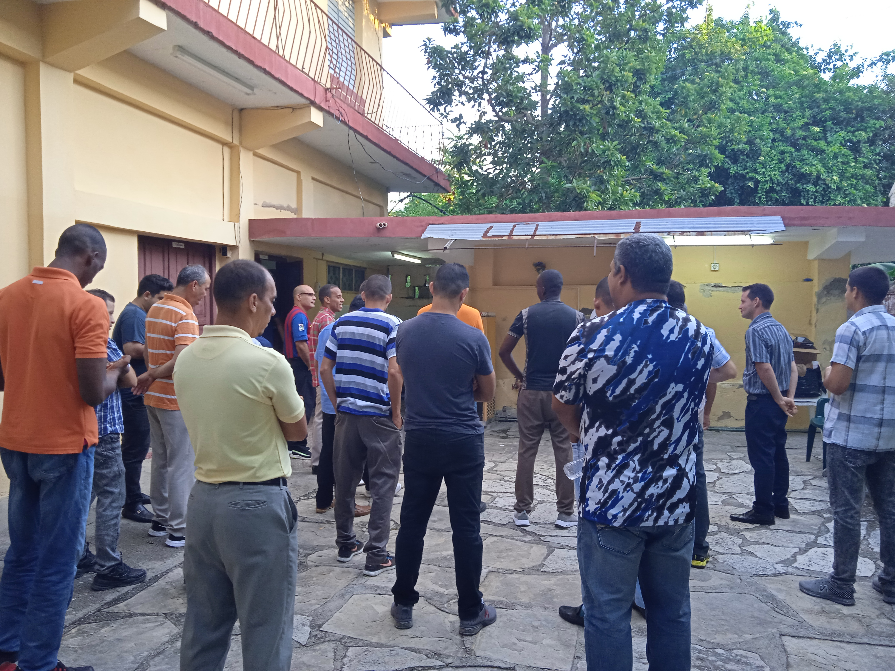

Preparación bíblica, ministerial y contextual en La Caoba, Santiago de Cuba. 70+ años equipando a la iglesia cubana.
"Formar integralmente a pastores y líderes cristianos para la edificación del pueblo de DIOS y la extensión de Su reino."
"Pastores y líderes cristianos con preparación integral acorde a los principios bíblicos y necesidades del contexto social."
Desde diplomados hasta maestrías, ofrecemos formación teológica de excelencia con modalidad semipresencial.
Educación cristiana infantil y desarrollo espiritual en la niñez.
Oídos Sordos, Corazones Oyentes
Formación especializada para el ministerio con la comunidad sorda.
Convenio internacional para estudios de posgrado.
Habilidades directivas para el ámbito eclesial.
Integración de fe y acción social comunitaria.
Convenio con el ministerio: "Vivos para Servir".
Visión de preparar un ministerio doméstico cubano.
El 10 de octubre abre sus puertas en Santiago de Cuba.
Adquisición del terreno de 20,000 m² en el Km 13½.
"¡Declaro abierto el Primer Curso del Seminario Teológico Bautista de Cuba Oriental!"


Un entorno natural para el encuentro con Dios

Años
m²
Alojamiento
Programas